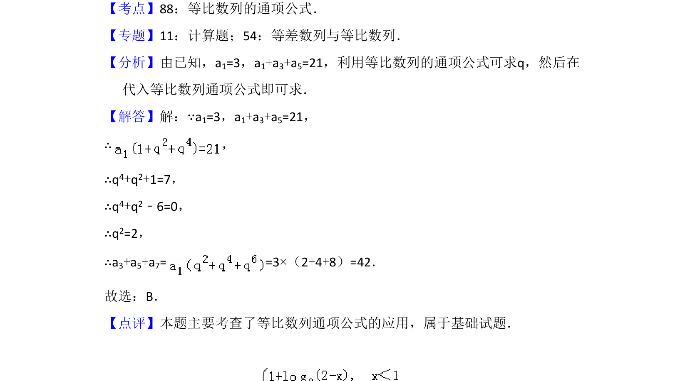

考点：等比数列 通项公式
已知等比数列首项及部分和，通过通项公式求公比后计算另一部分和。

📄 原 PDF 第 3 页：
素材/真题/吉林/2008-2024·（吉林）数学高考真题/2015年高考数学试卷（理）（新课标Ⅱ）（解析卷）.pdf
4．（5分）已知等比数列{an}满足a1=3，a1+a3+a5=21，则a3+a5+a7=（ ） A．21 B．42 C．63 D．84
【考点】88：等比数列的通项公式．菁优网版权所有 【专题】11：计算题；54：等差数列与等比数列． 【分析】由已知，a1=3，a1+a3+a5=21，利用等比数列的通项公式可求q，然后在 代入等比数列通项公式即可求． 【解答】解：∵a1=3，a1+a3+a5=21， ∴， ∴q4+q2+1=7， ∴q4+q2﹣6=0， ∴q2=2， ∴a3+a5+a7= =3×（2+4+8）=42． 故选：B． 【点评】本题主要考查了等比数列通项公式的应用，属于基础试题．